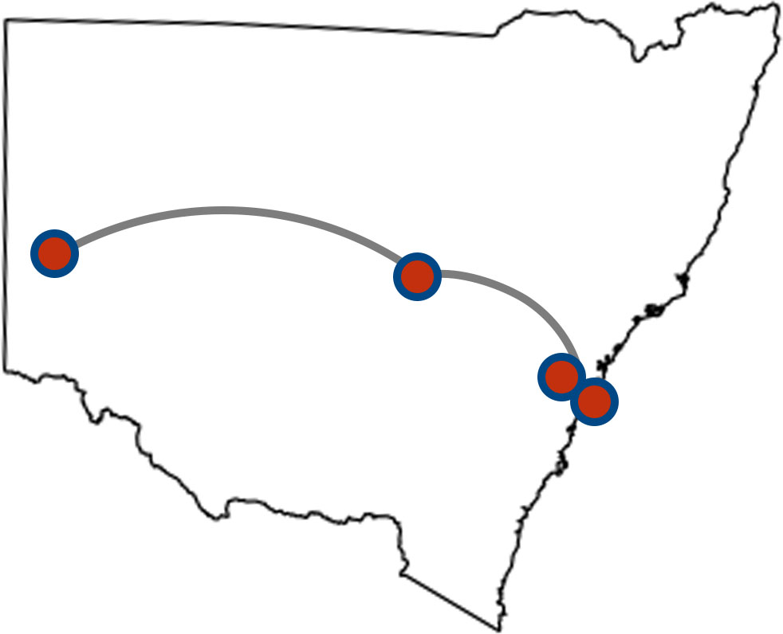
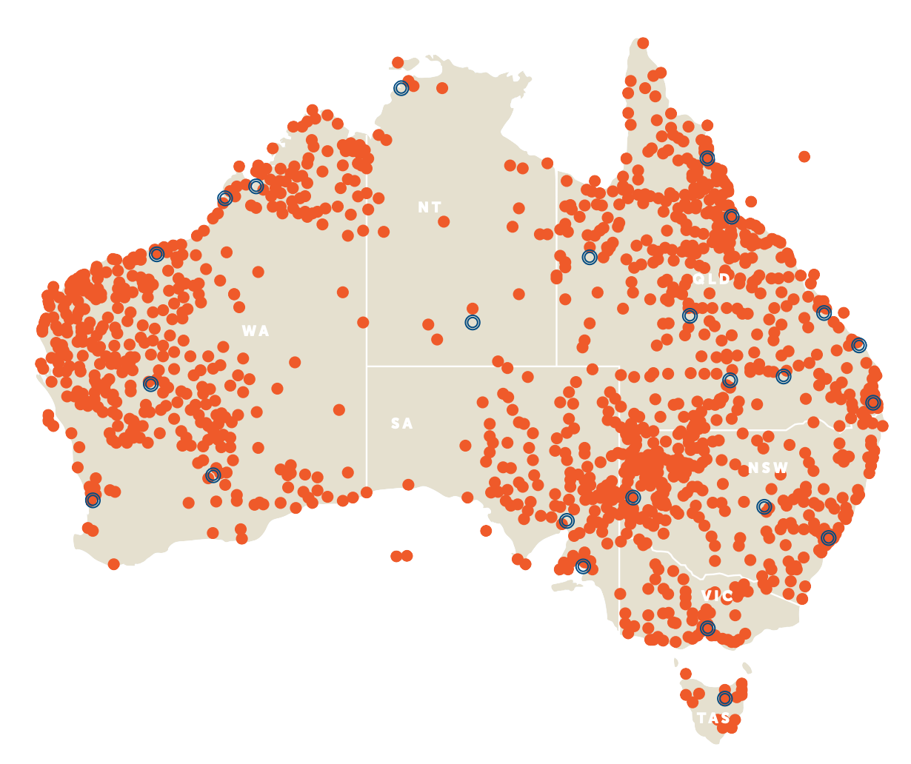

NSW Locations
The RFDS has 4 bases in New South Wales:
- Broken Hill Base
- Bankstown Base
- Dubbo Base
- Mascot Base 
The bases are the home for the RFDS crew and aircrafts however, they can land at almost all hospitals or medical centres with a landing pad.
